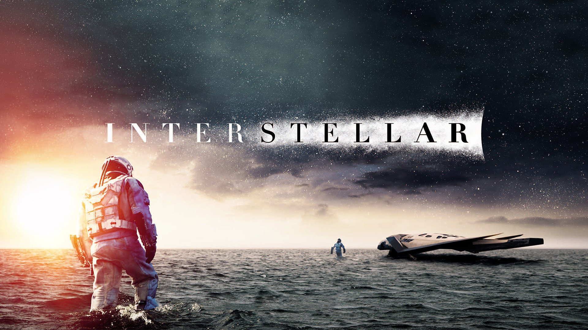

-

INTERSTELLAR
Filmin Konusu
Yakın bir gelecekte, tahıl ürünlerinin ölmesine neden olan bir küf yüzünden medeniyet gerileyerek tarım toplumu seviyesine düşmüştür. Dul bir mühendis ve eski bir NASA pilotu olan Joseph Cooper, ailesi ile birlikte bir tarla işletmektedir. O artık bir çiftçidir. 15 yaşında bir oğlu (Tom Cooper) ve 10 yaşında bir kızı (Murphy "Murph" Cooper) vardır. Bir toz fırtınasından sonra, Murphy'nin yatak odasının zemininde açıklanamayacak şekilde garip toz desenleri belirir; anomaliyi bir hayalete bağlar. Cooper sonunda desenlerin yer çekimi değişimlerinden kaynaklandığını ve bunların ikili kodda coğrafi koordinatları temsil ettiğini düşünür. Cooper'ın kızı Murphy; odasında bir hayaletin kendisi ile iletişim kurduğunu düşünmektedir. Sonrasında Murph'ün hayaletinin gönderdiği bilinmeyen istihbaratın yer çekimsel dalga kullanarak kodlandığını keşfederler. Tozlar üstünde kalan ikili sistemde yazılı koordinat Cooper ve kızını NASA'nın gizli bir üssündeki Profesör John Brand'e yönlendirir. Profesör Brand'in "Onlar" dediği, uzaylı bir zekânın Satürn yakınında bir solucan deliğini açtığını, bariz bir şekilde başka bir galaksiye geçerek yaşanabilir yeni bir gezegen bulmamız için bir umut verdiklerini söyler. NASA'nın “Lazarus görevleri” dev kara delik olan Gargantua yörüngesinde üç adet potansiyel yaşanabilir gezegen tanımlamıştır; Miller, Edmund ve Mann gezegenleri, isimlerini keşif için giden astronotlardan almıştır. Cooper'ın pilotluğunu yaptığı Endurance uzay aracı ile beraberindeki astronotların görevi bu gezegenlerdeki uzay istasyonlarından gelen veriye dayanarak hangi gezegenin yaşanabilir olduğunu araştırmaktır. Astronotlar Miller, Edmunds ve Mann olumlu sonuçlar bildirmiştir. Profesör Brand, verilerine dayanarak insanlığın hayatta kalmasını sağlamak için iki plan tasarlar. Aslında her şey bir döngüden ibarettir. On iki gönüllü, gezegenleri tek tek incelemek için solucan deliğinden geçmiştir. Cooper, koordinatları, eski amiri Profesör John Brand başkanlığındaki gizli bir NASA tesisine kadar takip eder. Profesör Brand, yer çekimi anomalilerinin başka yerlerde olduğunu söyler. Plan A, kolonileri uzaya itmek için bir yer çekimsel tahrik teorisi geliştirmeyi içerirken, Plan B, yaşanabilir bir gezegeni kolonileştirmek için 5.000 donmuş insan embriyosu taşıyan Endurance uzay aracının fırlatılmasını içerir. Cooper, Endurance'a pilotluk etmesi için işe tain edilir. Mürettebat, bilim adamları Dr. Amelia Brand (Profesör Brand'in kızı), Dr. Romilly, Dr. Doyle ve robotlar TARS ve CASE'ten oluşmaktadır. Cooper, ayrılmadan önce perişan hâldeki Murphy'ye, geri döndüğü zamana göre zamanlarını karşılaştırması için kol saatini verir. Solucan deliğini geçtikten sonra Romilly kara deliği incelerken Cooper, Doyle ve Brand, bir okyanus dünyası olan Miller'ın gezegenini araştırmak için bir çıkarma gemisiyle inerler. Miller'ın gemisinden enkaz bulduktan sonra, devasa bir gelgit dalgası Doyle'u öldürür (çünkü bu gezegendeki yer çekimi kuvvetlidir) ve geminin ayrılışını geciktirir. 2067'de mahsul darbeleri ve toz fırtınaları insanlığın hayatta kalmasını tehdit etmektedir. Mısır, yaşayabilen son üründür. Dünya ayrıca, Apollo ay görevlerinin sahteciliği de dâhil olmak üzere, genç nesillere sahte tarihin öğretildiği bir post-gerçekliğe dayalı topluma dönüşmektedir.
Filmin Oyuncuları
Matthew McConaughey ---> Cooper
Anne Hathaway ---> Amelia Brand
David Gyasi ---> Romilly
Wes Bentley ---> Doyle
Bill Irwin ---> TARS seslendirmesi
Josh Stewart ---> CASE seslendirmesi
Jessica Chastain ---> Murphy
Mackenzie Foy ---> Genç Murphy
Ellen Burstyn ---> Yaşlı Murphy
Michael Caine ---> Profesör Brand
Casey Affleck ---> Tom
Timothée Chalamet ---> Genç Tom
John Lithgow ---> Donald
Topher Grace ---> Getty
Matt Damon ---> Dr. Mann
William Devane ---> NASA yetkilisi -

PROMETHEUS
Filmin Konusu
Bir uzay aracı dünyaya gelir, insansı bir yaratık elinde bulunan sıvıyı içerek parçalanmaya başlar ve suya karışır. Onun DNA'sı biyogenez bir reaksiyon başlatır. 2089 yılında, arkeologlar Elizabeth Shaw ve Charlie Holloway birkaç antik kültürün eserleriyle eşleşen İskoçya'da bir yıldız haritası keşfeder. Onlar insanları dünyaya getiren bu yaratıkları "Mühendis" olarak adlandırmaktadırlar. Peter Weyland, Weyland Corporation yaşlı CEO'su, yıldız haritalarından yararlanarak LV-223 gezegenine bir seyir finanse etmiştir. Android David gemiyi kontrol etmektedir. Prometheus ekibi LV-233 gezegenine geldiklerinde, dünyaya benzediğini fakat aşırı nitrojenden dolayı yaşanamaz bir gezegen olduğunu keşfederler. Onlar taş yazıtları bulmak için geldikleri yerde, insansı bir kafatası ve büyük bir vücut keşfederler, bunun mühendis olduğunu düşünürler ve Shaw bunu incelemek için gemiye götürür. Mürettebat onların soyunun tükenmiş olduğunu tahmin eder ve diğer organlarını da bulurlar. Ekip üyeleri Millburn ve Fifield keşiflerlerin büyümesinden rahatsız olurlar ve Prometheus'a geri dönmeye çalışırlar, ancak girdikleri mağarada kaybolurlar. Ortaya çıkan bir fırtına yüzünden keşif yarıda kalır. Silindire benzer bir yapı keşfeden Android David, bu silindirlerden koyu bir sıvı aktığını görür ve bundan birkaç örnek alır. Geminin laboratuvarında, Mühendis DNA'sı ile insan DNA'sını karşılaştırırlar. David silindiri ve içindeki sıvıyı inceler. Daha sonra kasıtlı olarak kin duyduğu Holloway'ın içtiği içkisinin içine bu sıvıdan damlatır. Kısa bir süre sonra Holloway ve Shaw cinsel ilişkiye girer. Girdikleri mağarada Millbrun ve Fifield yılana benzeyen bir yaratıkla karşılaşırlar ve yaratık Millburn'u öldürür ve Fifield'in kaskına aşındırıcı bir sıvı püskürtür. Mürettebat döndüğünde, Millburn cesedini bulurlar. David canlı bir Mühendis kontrol odasını bulur ve Dünya'yı vurgulayan bir yıldız haritası keşfeder. Bu arada, Holloway hızla hasta olmaktadır. Tüm mürettebatla beraber Prometheus'a geri dönerler ancak Vickers onu gemisine almak istemez, onu ateş silahıyla yakarak öldürür. Daha sonra, hamile kalamamasına karşın Shaw'ın hamile olduğu ortaya çıkar. Bundan korkan Shaw, onu çıkarmak için otomatik cerrahi masasını kullanır. Shaw daha sonra Weyland'ın Prometheus gemisinde olduğunu keşfeder. Onun amacı, ölümü yaklaştığından ve bunu engellemek istediğinden Mühendislerden sonsuz yaşam talep etmektir. Ayrıca mutasyona uğramış Fifield Prometheus gemisinin hangarına saldırır ve mürettebattan birkaç kişiyi öldürür. Prometheus'un kaptanı Janek ateş silahıyla onu etkisiz hale getirir. Weyland ve Shaw eşliğinde takım, David'in keşfettiği kontrol odasına giderler. David uyutulmakta olan Mühendisi uyandırır ve Weyland ne istediğini açıklamak için onun dilinde konuşur. Mühendis ise sinirlenir, David'in kafasını koparır ve Weyland'ın takımını öldürerek cevap verir. Shaw kaçar ve Janek'e Mühendis'in sıvıyı Dünya'ya götüreceğini ve tüm insanları öldüreceğini hakkında uyarır. Vickers filika yardımı ile kaçar ve Janek Prometheus'u Mühendis'in gemisine çarptırır. Mühendisin zemine çakılan gemisi Vickers'i ezer. Shaw Prometheus'un kaçış filikasına gider ve içinden çıkardığı yaratığın büyüdüğünü görür. David'in hâlâ aktif olan kafası Shaw'ı Mühendis'in hayatta olduğunu ve onun için geldiği hakkında uyarır. Mühendis filikaya girer ve Shaw'a saldırır ve çaresiz durumda kalan Shaw yaratığın kapısını açar ve yaratık Mühendisi yakalar. Yaratık yumurtasını mühendisin içine aktarır. Shaw, David'in kafasını alır ve diğer bir gemiyle gezegenden kaçar. İnsanları neden yok etmek istediklerini araştırmak üzere bir sefere çıkar. Yaşam filikasında ise Mühendis'in içinden Yaratık doğar.
Filmin Oyuncuları
Noomi Rapace ---> Elizabeth Shaw Michael Fassbender ---> David
Charlize Theron ---> Meredith Vickers
Logan Marshall-Green ---> Charlie Holloway
Idris Elba ---> Janek
Guy Pearce Peter ---> Weyland
Sean Harris ---> Fifield
Benedict Wong ---> Ravel
Kate Dickie ---> Ford -

GRAVITY
Dr. Ryan Stone zeki bir tıp mühendisidir ve emekliliğinden önce son görevine çıkan yetenekli ve deneyimli astronot Matt Kowalsky'nin yönetimindeki mekikte ilk uzay yolculuğuna çıkar. Herşey yolunda gibi görünürken rutin bir keşif yürüyüşü sırasında bir felaket yaşanır. Mekik çarpan bir cisim sonucu paramparça olur. İki bilim insanı uzay boşluğunda yapayalnız kalırlar. Yeryüzü ile iletişimleri tamamen kopmuştur ve sonsuz karanlıkla başbaşadırlar. Şimdi korkunun yerini panik alır, üstelik var olan sınırlı oksijenleri de gitgide tükenmektedir. İkili eve, dünyaya dönüş yolunu bulabilecek midir?
Filmin Oyuncuları
Sandra Bullock ---> Dr. Ryan Stone
George Clooney ---> Matt
Ed Harris ---> Mission Control
Orto Ignatiussen ---> Aningaaq
Basher Savage ---> Russian Space Station Captain
Phaldut Sharma ---> Shariff Dasari
Amy Warren Explorer ---> Captain -

INCEPTION
Filmin Konusu
Dom Cobb (Leonardo DiCaprio) çok yetenekli bir hırsızdır. Uzmanlık alanı, zihnin en savunmasız olduğu rüya görme anında, bilinçaltının derinliklerindeki değerli sırları çekip çıkarmak ve onları çalmaktır. Cobb’un bu ender mahareti, onu kurumsal casusluğun tehlikeli yeni dünyasında aranan bir oyuncu yapmıştır. Ancak, aynı zamanda bu durum onu uluslararası bir kaçak yapmış ve sevdiği her şeye mal olmuştur. Cobb’a içinde bulunduğu durumdan kurtulmasını sağlayacak bir fırsat sunulur. Ona hayatını geri verebilecek son bir iş; tabi eğer imkânsız “başlangıç”ı tamamlayabilirse. Mükemmel soygun yerine, Cobb ve takımındaki profesyoneller bu sefer tam tersini yapmak zorundadır; görevleri bir fikri çalmak değil onu yerleştirmektir. Eğer başarırlarsa, mükemmel suç bu olacaktır. Ama ne dikkatle yapılan planlamalar, ne de uzmanlıkları onları, her hareketlerini önceden tahmin ettiği anlaşılan tehlikeli düşmanlarına karşı hazırlıklı kılabilir. Bu, gelişini sadece Cobb’un görebildiği bir düşmandır. Olay yeri ise zihniniz.
Filmin Oyuncuları
Leonardo DiCaprio --->
Marion Cotillard ---> Mal
Ellen Page ---> Ariadne
Joseph Gordon-Levitt ---> Arthur
Ken Watanabe ---> Saito
Tom Hardy ---> Eames
Cillian Murphy ---> Robert Fischer
Michael Caine ---> Miles